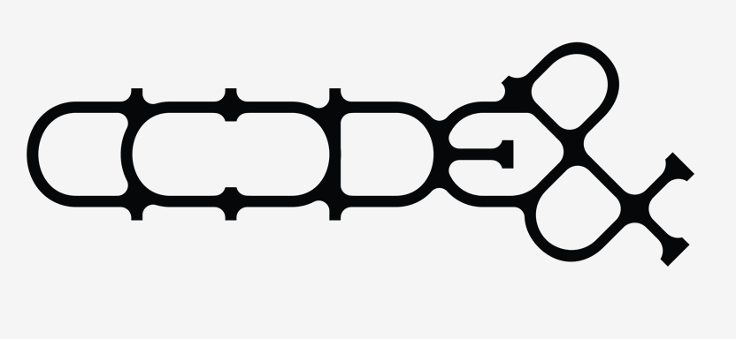
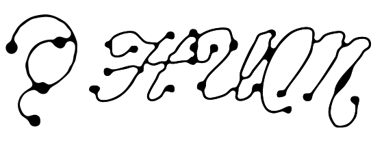
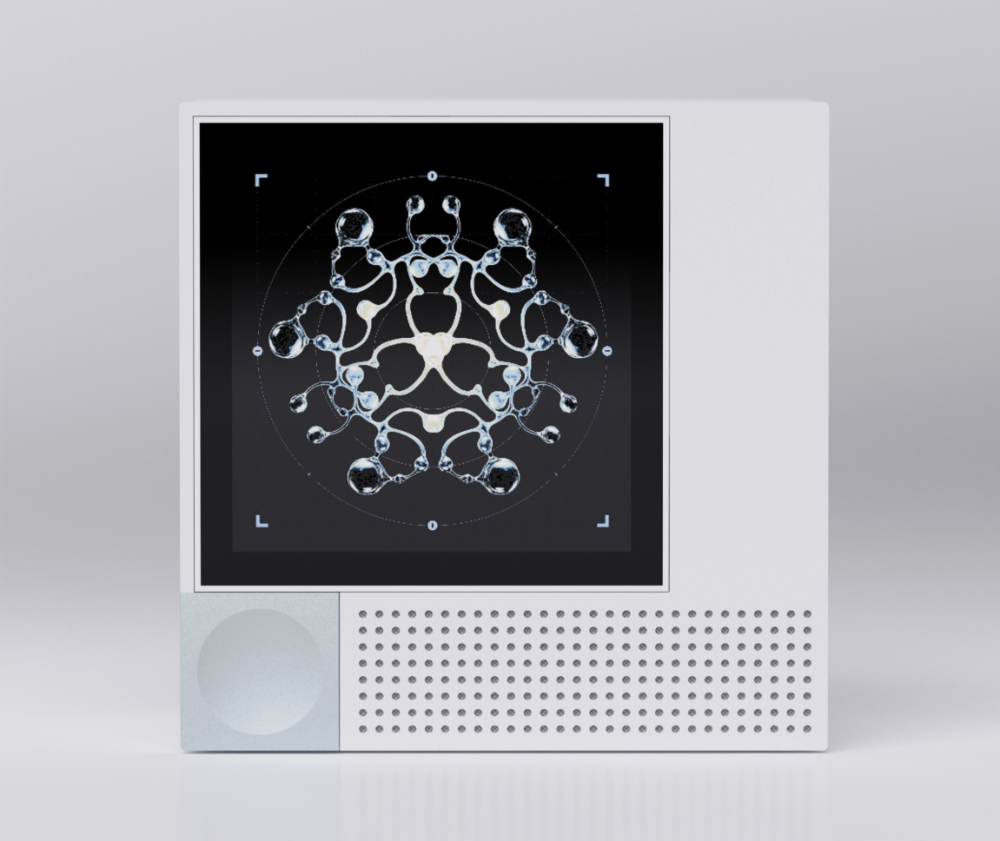
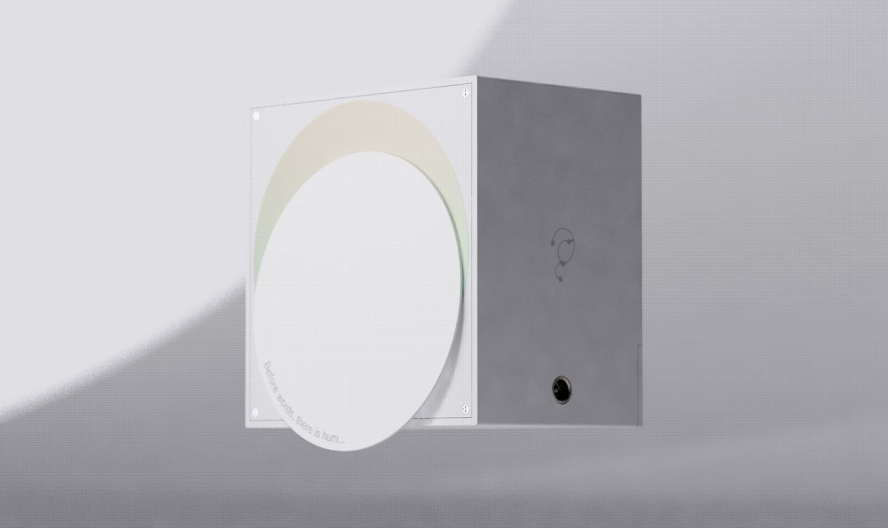

COLLECT
일상의 소리를 채집하고
마음이 머무는 순간, HUM을 열어 주변의 소리를 담습니다.


by code&감각을 조합해보기스쳐 가던 소리가, 나만의 형태로.
세상에 귀 기울이는 작은 움직임에서
HUM의 이야기가 시작됩니다.
출근길의 발걸음, 정류장에 스치는 바람,
오후의 창문을 두드리는 빗소리.
화면을 바라보는 동안 지나쳤던 소리들.
HUM은 이동과 기다림의 시간을
주변에 귀 기울이는 작은 루틴으로 바꿉니다.

손끝에서 시작되는 감각
소리를 받아들이는 ‘귀’와 세상으로 연결되는 ‘틈’에서 출발한 디자인. 원판을 여는 작은 움직임으로, 주변에 집중하는 순간을 만듭니다.
열면, 채집의 시작
닫으면, 하나의 기록
화면 위로 피어나는 소리
현재 시제품 개발 중이며, 제품 이미지와 동작은 설계안을 바탕으로 합니다.

01 / RECORDING ON
원판을 열면 주변의 소리를 채집하는 순간이 시작됩니다. 화면 대신 지금 머무는 공간을 바라보세요.
제품의 개폐 동작을 보여주는 디자인 미리보기입니다.
더 많이 기록하기보다, 한 번 더 느끼기.
하루의 소리 하나를 골라 그때의 마음과 함께 남겨보세요.
COLLECT
마음이 머무는 순간, HUM을 열어 주변의 소리를 담습니다.
CHOOSE
하루에 하나의 소리를 선택하고, 그 순간 느꼈던 감정을 남깁니다.
PRESERVE
소리의 특징을 담은 아트워크로 지나간 순간을 다시 마주합니다.
당신의 호기심으로 완성되는 형태
여섯 개의 조각, 열다섯 가지 만남.
두 조각을 골라 HUM의 그래픽이
서로 연결되는 순간을 만나보세요.
두 조각을 골라보세요. 새 조각을 누르면
먼저 선택한 조각이 바뀝니다.
B1과 C1이 만나고 있어요.
HUM 그래픽 원본을 활용한 시각 체험입니다.
실제 소리를 녹음하거나 분석하지 않습니다.
들었던 순간을,
바라볼 수 있도록.
HUM은 소리의 크기와 높낮이, 장소와 시간에 따라 그래픽이 달라지는 경험을 설계합니다. 연동 앱에서는 날짜·감정·장소별로 아트워크를 모아 보고, 채집한 순간을 돌아볼 수 있도록 준비하고 있습니다.
위 체험은 그래픽 조합 예시이며, 음향 분석과 앱 연동 기능은 개발 중입니다.HUM이 그리는 다음 풍경
골목, 통학로, 정류장, 공원.
우리가 실제로 살아가는 곳의 소리가 모이면,
더 나은 음환경을 이해하는 단서가 됩니다.
HUM은 개인의 감각 기록이 시민 참여형 음환경 데이터로 이어지는 구조를 구상합니다. 사용자가 동의한 익명 데이터를 모아, 지자체의 소음 관리와 도시계획을 돕는 것이 목표입니다.
공공 데이터 연계는 개발 구상입니다. 사용자 동의, 기기 내 음성 구간 보호, 격자 단위 위치 처리, 음향 특징값 전송을 설계 원칙으로 삼고 있습니다.
주변의 소리를 채집하는 디바이스와 개인 아카이브를 위한 연동 앱을 함께 설계하는 프로젝트입니다. 소리를 수치나 녹음 파일로만 남기는 데서 나아가, 일상의 감각을 시각적 아트워크로 간직하는 경험을 제안합니다.
제공된 기획서 기준으로 브랜드, 제품 구조, 사용자 경험 설계를 마치고 시제품을 제작 중입니다. 출시 일정과 판매 가격은 아직 이 페이지에서 안내하지 않습니다.
소리의 크기와 주파수, 장소 등 여러 특성에 따라 여섯 개의 그래픽 조각을 조합하는 방식으로 설계하고 있습니다. 시간대의 색과 사용자가 남긴 감정까지 반영해 각 순간에 다른 형태를 만드는 것이 목표입니다.
기획안에서는 사용자가 동의한 경우에만 공공 데이터 제공에 참여하는 방식을 채택하고 있습니다. 사람 목소리 구간 보호, 위치 격자화, 원본 대신 음향 특징값 전송을 계획하며, 실제 운영 정책은 개발 과정에서 구체화할 예정입니다.
HUM을 만드는 회사, code&
code&는 HUM을 통해 일상의 소리와 사람을 연결합니다. 주변에 귀 기울이는 작은 행동이, 개인의 기록을 넘어 우리가 사는 환경을 이해하는 경험이 되도록.
HUM을 함께 만드는 사람들
소프트웨어, 디자인, 전자공학.
여섯 명의 시선으로 일상의 소리를 탐구합니다.
소프트웨어융합학과
eunseo.oh@example.com소프트웨어융합학과
hyein.seo@example.com산업디자인학과
soyun.jeong@example.com시각디자인학과
soyoung.jang@example.com전자공학과
juyoung.park@example.com전자공학과
youngjae.lee@example.com프로필 사진은 실제 팀원과 무관한 AI 생성 임시 이미지이며, 이메일은 교체 예정인 예시 주소입니다.
OPEN. LISTEN. WONDER!